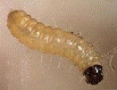

| Home |
| PEST OF JASMINE |
mAJOR pESTS |
| 1. Budworm |
| 2. Gallery worm |
| 3. Leaf webworm |
| 4. Jasmine eriophyid mite |
mINOR pESTS |
| 1. Jasmine leaf roller |
| 2. Redspider mite |
| 3. Jasmine bug |
| 4. Green plant hopper |
| Questions |
| Download Notes |
JASMINE :: MAJOR :: BUDWAORM
Budworm: Hendecasis duplifascialis (Pyraustidae: Lepidoptera)
Host range: Jasmine
Damage symptoms :
Tiny caterpillar makes holes on the flower bud, feeds on the inner content of the bud It makes a circular hole on the corolla tube emerges and tunnels to move into other buds of the same shoot.. Infested flowers turn violet in colour, and fall off. In case of severe infestation, adjacent flower buds are webbed together by means of silken thread.
Bionomics
|  |
Freshly laid eggs of bud worm are round and creamy white in colour which later turn yellow. Eggs are laid singly and glued on the unopened or immature buds, calyx and sometimes on the bud stalk. They hatch in about 3-4 days. The neonate larva is creamy yellow in colour with dark black head and prothoracic shield and passes through five instars. Pupation mostly takes place inside the soil and sometimes on the leaves, at the junction of petioles and leaf blade. The adult is a small, pale white moth with wavy markings on wings and black patches on the wing margin. The moths have a pair of well developed black palpi and scaly proboscis.
Management :
Rake the soil during the off season to expose the pupae and apply carbaryl 10 D around the basin.
Apply carbofuran at 40g/plant basally.
Set up light trap during the peak emergence of adult moths
Collect the damaged pinkish flowers once in a week and destroy to arrest further multiplication.
Spray neem seed kernel extract 5 % or monocrotophos 36 SL 1.0 L or endosulfan 750 ml or chlorpyriphos 20 EC at 750 ml or dimethoate 30 EC 500 ml or cypermethrin 25 EC 200 ml in 500 -750 L of water per hectare in the evening hours
Conserve larval parasitoids, Perilampus sp, Phanerotoma sp and Mesochrous sp.